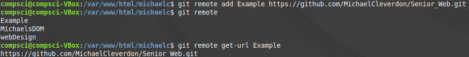

| First, you have to make sure git is installed on your machine |
|
| After installing, you have to initialize a repository in Git (not Github) |
|
| I then checked which files are staged, not added, or modified using 'git status' |
 |
| staging all of my files to the working tree, with 'git add -A', you can add individual files, but I wanted to add everything |
|
| When checking the repository's status again 'git status', it looks completely different |
|
| After making sure I have the right files staged on my local repository, I can commit them and create a snapshot of my code and the file versions I currently have working on. This is useful in order to be able to revert to different versions if something breaks. |
|
| After staging files and committing them to the local repository, I now have to start to be able to move things onto Github. This is done by using remotes. Here I add a remote called Example that links to a repository I have on Github called SeniorWeb |
 |
| Finally, we push it to a branch of our repository in order to have it be my code, and I can merge it to the master later on after I'm sure the code is working properly |
|
| This is the result of all the work we just did in order to get the files on Github |
|
| Click here to go to my github page for this project. |